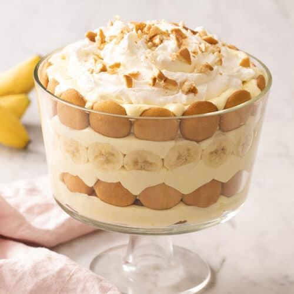

Banana Pudding

Description
This is one of my favorite desserts! It is very simple and quick to make.
and the best part is that it requires no baking!.
Ingredients
- 2 cups cold milk
- 1 (5oz.) package instant vanilla pudding mix
- 1 (14oz.) can sweetened condensed milk
- 1 tablespoon vanilla extract
- 1 (12oz.) container frozen whipped topping, thawed (make sure to use
frozen whipped topping, canned whipped cream does not have the same
consistency!)
- 1 (16oz.) package vanilla wafers
- 1 large bunch of bananas, sliced
Steps
- Gather your ingredients; make sure your whipped topping is thawing, your milk is cold and your bananas are sliced.
- Place milk and pudding mix into a large bowl, and whisk until mix is fully dissolved.
- Whisk in the condensed milk until smooth.
- Stir in the vanilla, and fold the whipped topping into the mixture.
- Layer in your dish wafers, banana slices, and pudding mixture. Create multiple layers if you have a taller dish.
- Chill, and top with crushed wafers when ready to serve.